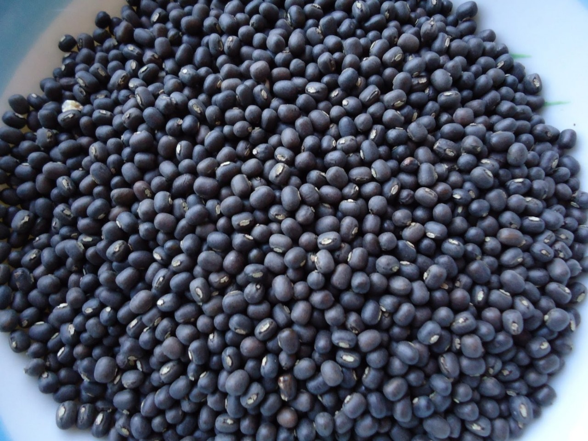

Blackgram (Urad Dal) Cultivation Guide

1. Land Preparation
- Two to three ploughings to make a fine tilth.
- Well-drained loamy soils with neutral pH preferred.
- Apply 5 tons of FYM during last ploughing for better soil fertility.
2. Seed Selection & Sowing
- Use varieties like T-9, PU-31, LBG-752 for high yield and disease resistance.
- Seed rate: 10–12 kg per acre.
- Spacing: 30 cm × 10 cm for line sowing.
- Seed treatment with Rhizobium and Trichoderma is recommended.
3. Water Management
- Generally grown as a rainfed crop; no irrigation needed under normal conditions.
- One irrigation at flowering and one at pod development improves yield in dry spells.
4. Fertilization Schedule
- Basal application of 10 kg Urea and 40–50 kg SSP per acre.
- Spray of 2% DAP during flowering stage boosts grain filling.
5. Weed & Pest Management
- First weeding at 20 days after sowing, second at 35 days.
- Pre-emergent herbicide (Pendimethalin) can help control early weeds.
- Common pests include aphids and pod borers; use neem-based or approved insecticides.
6. Investment Breakdown (Per Acre)
| Input |
Estimated Cost (INR) |
| Seeds |
₹700 – ₹1,000 |
| Fertilizers |
₹1,200 – ₹1,500 |
| Pesticides |
₹600 – ₹1,000 |
| Labor |
₹3,000 – ₹4,000 |
| Irrigation (if needed) |
₹500 – ₹800 |
| Total Investment |
₹6,000 – ₹8,300 per acre |
7. Harvesting & Yield
- Harvest when 80–90% of pods turn black and dry.
- Expected yield: 4–6 quintals per acre.
8. Market Rate & Profit Estimation
- Market price: ₹6,000 – ₹7,000 per quintal.
- Gross returns: ₹24,000 – ₹42,000 per acre.
- Net profit: ₹15,000 – ₹33,000 per acre.